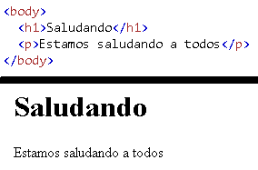
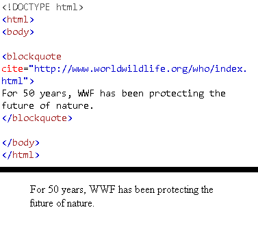
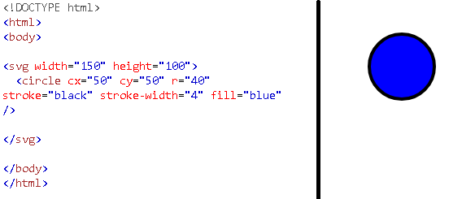
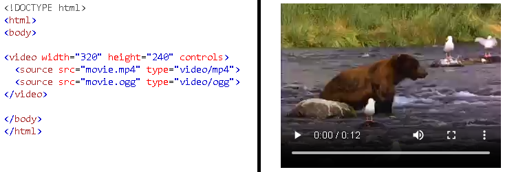

Es un contenedor para metadata (datos sobre datos)
y se coloca entre la etiqueta <html>y el <body>.
Los metadatos suelen definir el título del documento,
el conjunto de caracteres, los estilos, los guiones,
y otra metainformación.
<title>
La etiqueta define el título del documento.
El título debe ser solo texto y se muestra
en la barra de título del navegador
o en la pestaña de la página.
<body>
Define el cuerpo del documento.
contiene todo el contenido de un documento HTML,
como encabezados, párrafos, imágenes,
hipervínculos, tablas, listas, etc.

<h1> hasta <h6>
Define encabezados html.
<p>
Define un párrafo.
<Br>
Inserta un salto de línea.
<hr>
Define un cambio temático en el contenido.
<!--...-->
Define un comentario (no se muesta en la pagina web).
Formateo
Etiqueta
Descipción
Ejemplo
<abbr>
Define una abreviatura o un acrónimo.
<address>
Define la información de contacto del autor/propietario
de un documento o un artículo.
<b>
La etiqueta especifica texto en negrita
sin ninguna importancia adicional.
<bdi>
La etiqueta aísla una parte del texto que podría tener un
formato diferente al de otro texto fuera de ella.
<bdo>
La etiqueta se utiliza para anular la dirección actual del texto.
<blockquote>
La etiqueta especifica una sección que se cita de otra fuente.

<center>
Se utiliza para alinear el texto al centro.
<cite>
Define el titulo de un trabajo creativo.
<code>
Define un fragmento de código informático
<del>
La etiqueta define el texto que se ha eliminado de un documento.
Por lo general, los navegadores trazan una línea
a través del texto eliminado.
<dfn>
La etiqueta representa el atributo "elemento de definición",
y especifica un término que se va a definir
dentro de el contenido.
<em>
La etiqueta se utiliza para definir el texto enfatizado.
El contenido del interior suele mostrarse en cursiva.
<i>
La etiqueta se usa a menudo para indicar un término técnico,
una frase de otro un lenguaje, un pensamiento,
el nombre de un barco, etc.
<ins>
La etiqueta define un texto que se ha insertado en un documento.
Los navegadores Por lo general, subraya el texto insertado.
<kbd>
La etiqueta se utiliza para definir la entrada del teclado.
El contenido del interior se muestra en la fuente monoespaciada
predeterminada del navegador.
<mark>
La etiqueta define el texto que deben estar marcados o resaltados.
<meter>
La etiqueta define una medida escalar dentro de un
rango conocido o un valor fraccionario.
Esto también se conoce como medidor.
<pre>
La etiqueta define el texto preformateado.
Se mostrará el texto exactamente como está escrito en el código fuente HTML.
<progress>
La etiqueta representa el Progreso de finalización de una tarea.
<q>
La etiqueta define una cita corta.
<rp>
La etiqueta se puede usar para proporcionar paréntesis alrededor
de un texto ruby, para ser mostrados por navegadores
que no admitan anotaciones de ruby.
<rt>
La etiqueta define una explicación o pronunciación de caracteres
(para tipografía de Asia Oriental) en una anotación de ruby.
<ruby>
La etiqueta especifica una anotación de ruby.
Este tipo de de anotación se utiliza a menudo en las
publicaciones japonesas.
<s>
La etiqueta especifica el texto que ya no es correcto,
preciso o relevante. El texto se mostrará con una
línea que lo atraviese.
<samp>
La etiqueta se utiliza para definir la salida de muestra
de un programa informático. El contenido del interior
se muestra en la fuente monoespaciada predeterminada del navegador.
<small>
La etiqueta define texto más pequeño
(como derechos de autor y otros comentarios secundarios).
<strong>
La etiqueta se utiliza para definir texto con gran importancia.
Por lo general, el contenido del interior se muestra en negrita.
<sub>
La etiqueta define el texto del subíndice.
El texto de subíndice se puede usar para fórmulas químicas.
<sup>
La etiqueta define el texto en superíndice.
El texto en superíndice se puede utilizar para las notas a pie de página.
<time>
La etiqueta define un tiempo específico (o fechahora).
<u>
La etiqueta representa un texto que no está articulado
y tiene un estilo diferente de texto normal,
como palabras mal escritas o nombres propios en texto chino.
Por lo general se muestra con un subrayado.
<var>
La etiqueta se utiliza para definir una variable en la programación
o en una expresión matemática.
El contenido que contiene suele ser se muestra en cursiva.
<wbr>
La etiqueta (Word Break Opportunity) especifica en
qué parte de un texto estaría bien agregar un salto de línea.
Formulario y entradas
Etiqueta
Descipción
Ejemplo
<form>
La etiqueta se utiliza para crear un formulario HTML
para la entrada del usuario.
<input>
La etiqueta especifica un campo de entrada
en el que el usuario puede introducir datos.
<textarea>
La etiqueta define un control de entrada de texto de varias líneas.
Usado mayormente para recopilar informacion en formularios como
comentarios o reseñas.
<button>
La etiqueta define un botón en el que se puede hacer clic.
<select>
El elemento se utiliza para crear una lista desplegable.
<optgruoup>
La etiqueta se utiliza para agrupar opciones relacionadas
en un elemento <select> (lista desplegable).
<option>
Define una opción en una lista
<label>
Define una etiqueta para un elemento <input>
<fieldset>
La etiqueta se utiliza para agrupar elementos
relacionados en un formulario.
<legend>
La etiqueta define un título para el elemento <fieldset>
<datalist>
La etiqueta especifica una lista de opciones predefinidas
para un elemento <input>. Los usuarios verán una lista
desplegable de opciones predefinidas a medida que ingresan datos.
<output>
La etiqueta se utiliza para representar el resultado
de un cálculo (como el realizado por un script).
Imagenes
Etiqueta
Descipción
Ejemplo
<img>
Define una imagen
<map>
La etiqueta se utiliza para definir un mapa de imagen.
Un mapa de imagen es una imagen con áreas en
las que se puede hacer clic.
<area>
La etiqueta define un área dentro de un mapa de imagen
(un mapa de imagen es una imagen con áreas en las que
se puede hacer clic).
<canvas>
Se utiliza para dibujar gráficos, sobre la marcha,
a través de secuencias de comandos (generalmente JavaScript)
<figcaption>
Define un título para un elemento <figura>
<figure>
Especifica el contenido autónomo
<picture>
Define un contenedor para varios recursos de imagen.
En lugar de tener una imagen que se escala hacia arriba
o hacia abajo en el ancho de la ventana gráfica,
se pueden diseñar varias imágenes para llenar más
bien el Vista del navegador.
<svg>
Define un contenedor para gráficos SVG

Audio y Video
Etiqueta
Descipción
Ejemplo
<audio>
La etiqueta se utiliza para incrustar sonido contenido de un documento,
como música u otras secuencias de audio.
<source>
La etiqueta se utiliza para especificar varios
recursos multimedia para elementos multimedia,
como <video>, <audio>, y <imagen>.
<track>
Este elemento se utiliza para especificar subtítulos,
archivos de subtítulos u otros archivos que contengan texto,
que debe ser visible cuando se reproduzca el
contenido multimedia.
<video>
La etiqueta se utiliza para incrustar vídeo contenido
de un documento, como un clip de película u otras
secuencias de vídeo.

Links
Etiqueta
Descipción
Ejemplo
<a>
El atributo más importante del elemento es el atributo,
que indica el destino del vínculo.
<link>
La etiqueta se usa con mayor frecuencia para vincular
a hojas de estilo externas o para agregar
un favicon a su sitio web.
<nav>
La etiqueta define un conjunto de vínculos de navegación.
Listas
Etiqueta
Descipción
Ejemplo
<ul>
Utilice la etiqueta junto con la etiqueta
<li> para Crea listas desordenadas.
<ol>
La etiqueta define una lista ordenada.
Una lista ordenada puede ser numérica o alfabética.
<li>
La etiqueta se utiliza dentro de listas ordenadas (<ol>),
listas desordenadas (<ul>)
y en listas de menús (<menu>).
<dl>
La etiqueta se utiliza junto con <dt> (define términos/nombres)
y <dd> (describe cada término/nombre).
<dt>
La etiqueta define un término/nombre en una lista de descripciones.
<dd>
La etiqueta se utiliza para describir un
término/nombre en una lista de descripciones.
Tablas
Etiqueta
Descipción
Ejemplo
<table>
La etiqueta define una tabla HTML.
Una tabla HTML consta de un elemento y
uno o varios elementos <tr>, <th> y <td>
<caption>
La etiqueta define un título de tabla.
La etiqueta debe insertarse inmediatamente
después de la etiqueta <tabla>.
<th>
La etiqueta define una celda de encabezado en una tabla HTML.
<tr>
La etiqueta define una fila en una tabla HTML.
<td>
La etiqueta define una celda de datos estándar en una tabla HTML.
<thead>
La etiqueta se utiliza para agrupar el contenido
del encabezado en una tabla HTML.
<tbody>
La etiqueta se utiliza para agrupar el
contenido del cuerpo en una tabla HTML.
<tfoot>
La etiqueta se utiliza para agrupar
el contenido del pie de página en una tabla HTML.
<col>
La etiqueta especifica las propiedades de columna
de cada columna dentro de un elemento <colgroup>.
<colgroup>
La etiqueta es útil para aplicar estilos a columnas enteras,
en lugar de repetir los estilos para cada celda, para cada fila.
Estilos y semánticas
Etiqueta
Descipción
Ejemplo
<style>
La etiqueta se utiliza para definir
la información de estilo (CSS) para un documento.
<div>
La etiqueta se utiliza como contenedor para elementos HTML -
que luego se diseña con CSS o se manipula con JavaScript.
<span>
La etiqueta es un contenedor en línea que se utiliza
para Marcar una parte de un texto o una parte de un documento.
<header>
El elemento representa un contenedor para el
contenido introductorio o Un conjunto de enlaces de navegación.
<footer>
La etiqueta define un pie de página para un documento o sección.
<main>
Especifica el contenido principal de un documento.
<section>
La etiqueta define una sección en un documento.
<article>
La etiqueta especifica contenido independiente y autónomo.
<aside>
La etiqueta define algún contenido aparte del
contenido en el que se coloca.
El contenido aparte debe estar relacionado
indirectamente con el contenido circundante.
<details>
La etiqueta se utiliza a manudo para crear
un widget interativo que el usuario puede abrir
y cerrar. Este contiene informaciones adiconales.
<summary>
La etiqueta define un encabezado visible para
el elemento <details>. Se puede hacer clic en
el encabezado para ver/ocultar los detalles.
<dialog>
La etiqueta define un cuadro de diálogo o subventana.
<data>
Esta etiquete elemento proporciona un valor legible por máquina
para los procesadores de datos y Un valor legible
por humanos para la representación en un navegador.
Meta información
Etiqueta
Descipción
Ejemplo
<meta>
siempre van dentro del elemento <head>,
y se utilizan normalmente para especificar
el conjunto de caracteres, la descripción
de la página, palabras clave, autor del documento
y configuración de la ventanilla.
<base>
La etiqueta especifica la URL base
y/o destino para todas las URL relativas de un documento.
Programación
Etiqueta
Descipción
Ejemplo
<script>
La etiqueta se utiliza para incrustar un
script del lado del cliente (JavaScript).